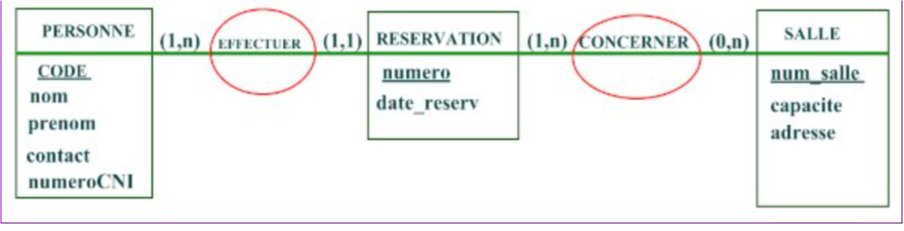

Corrigé harmonisé national épreuve d’informatique au baccalauréat C, D et E 2025
Partie I : Systèmes d’informatique / 07 pts
Question 1 :
Définissons le terme Internet. 0,5 pr
Réseau informatique mondial qui offre de multiples services à ses utilisateurs.
Question 2 :
Citons deux types de systèmes informatiques de votre choix. 0,5x 2 = 1 pt
Système informatique personnel,
système informatique d'organisation,
Système informatique de contrôle et commande.
Question 3 :
Énonçons le rôle de chacun des outils suivants :
a) Onduleur ; 0,5 pt
Permet d’emmagasiner de l'énergie électrique et de la restituer en cas de coupure d'électricité pour une période donnée.
b) MS Windows 2016 server ; 0,5 pt
Gérer les ressources matérielles et logicielles d'un ordinateur de type serveur.
Assurer le fonctionnement global d'un ordinateur de type de serveur.
gérer et fournir des services réseaux, des applications et des ressources à des utilisateurs via un réseau.
c) Commutateur ; 0.5 pt
Interconnecter les équipements dans un réseau local.
Acheminer des messages uniquement au destinataire dans un réseau.
Question 4 :
Déterminons le type de réseau informatique que vous pouvez mettre en œuvre dans une salle de travaux pratiques au sein d'un établissement scolaire. : 0,5 pt
LAN‘(réseau local)
Question 5 : 0,5 pt
Nommons la topologie physique de réseau qui requiert l'utilisation d'un commutateur.
Topologie en étoile.
Question 6 : 0,75 x 2 = 1,5 pt
Relevons deux caractéristiques de base prises en compte lors de l'achat d'un ordinateur. A
Fréquence du processeur,
Capacité de la RAM,
Capacité du disque dur, taille de l'écran,
La capacité de la mémoire graphique dédiée.
Question 7 : 0,75 x 2 = 1,5 pt
Donnons de deux manières différentes la formule à saisir dans la cellule G2 permettant de trouver le total des ventes.Serveurs informatiques
=SOMME (B2 : F2)
=B2+C2+D2+E2+F2
=SOMME (B2 ; C2; D2 ; E2 ;F2)
PARTIE II : SYSTÈMES D'INFORMATION ET BASES DE DONNÉES / 07 pts
Exercice 1 : Systèmes d'information 3 pts
Travail à faire : A partir de vo connaissances sur la modélisation d'un SI, élaborer le
MCD de cette agence de location en faisant ressortir :
Les entités avec les propriétés et leurs identifiants.
Les relations entre les entités.
La représentation des cardinalités.

Exercice 2 : Bases de données 4 pts
Soit la table représentant les informations sur les employés d'une entreprise de construction.
Question 1 : 0,5 pt
Citons un exemple de logiciel permettant d’implémenter cette table.
MySQL, MS Access, Oracle, Sybase, DB2, SQL Server, PostgreSQL, Informix
Question 2 : 0,5 pt
Donnons la signification de SQL
Structured Query Language
Question 3 : 1,5 pt
Écrirons la requête SQL qui peiäet d'enregistrer l'employé (“C004","NKOMA Leslie", “Statisticienne", 300 000) dans la table Employes
INSERT INTO Employes (Code, ‘Noms, Titre, Salaire) VALUES ("C004", "NKOMA